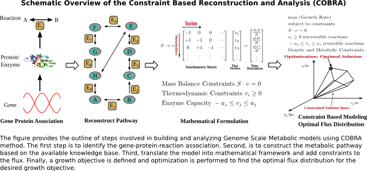
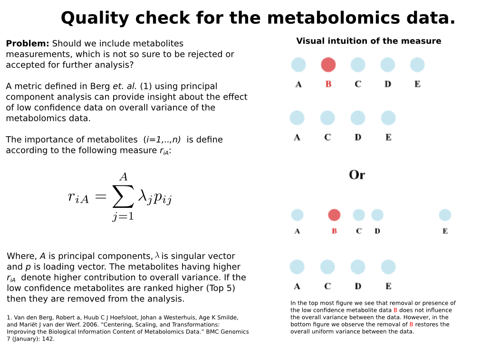
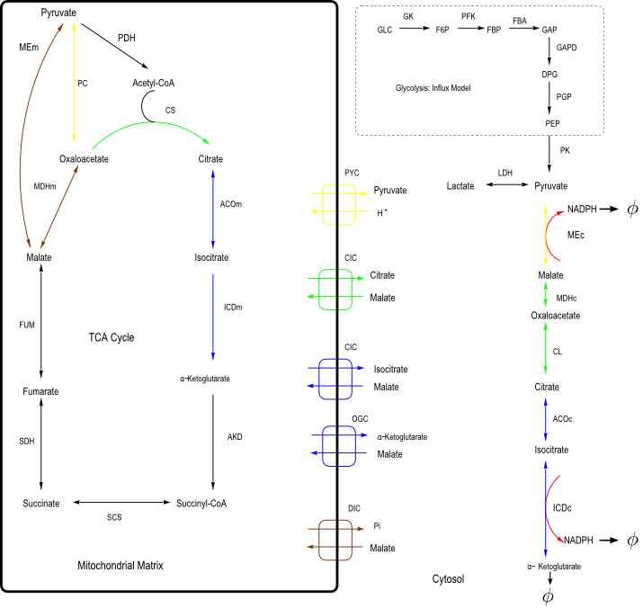
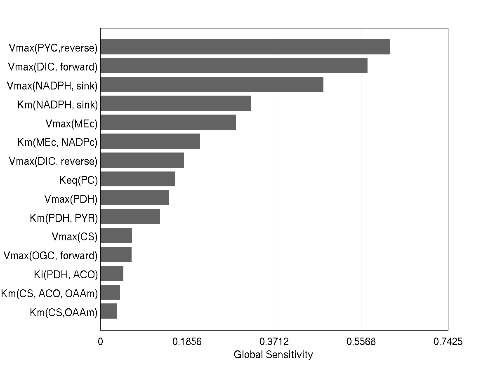
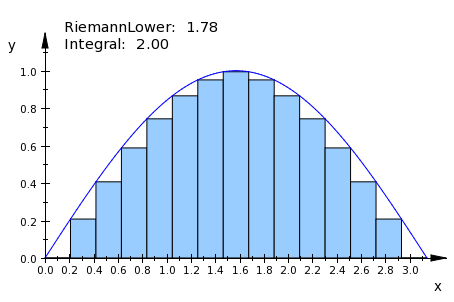

Research Statement
Quantitative decision systems, analytical workflows, and teaching
![]()
Introduction
I develop analytical models to understand and predict complex systems. Across quantitative finance, and scientific modeling of complex systems, the constant theme in my work is the translation of loosely structured, data-rich problems into analytical frameworks that make assumptions explicit, separate structural uncertainty from noise, and support decisions under real operational constraints. This perspective draws on training in applied mathematics, earlier research on co-expression networks and intracellular systems in diabetes and cancer, and current experience with systematic investing.
My current research program sits at the intersection of quantitative finance, inverse problems, non-smooth optimization, and computational science. Earlier work in systems biology required me to integrate heterogeneous data sources, formulate mechanistic models, calibrate them against experiments, and test how sensitive conclusions were to parameter and model uncertainty. I now extend those habits to finance by asking whether a new signal genuinely adds value to an existing portfolio process, how interactions among signals change the marginal contribution of information, and how scalable computation can make that evaluation systematic rather than anecdotal.
Previous Research Projects
Post-Doctoral Research Work
In my postdoctoral research, I developed a rigorous workflow for aggregating, checking, and integrating metabolomics and gene-expression data into genome-scale metabolic models built through constraint-based reconstruction and analysis. This work combined biological knowledge representation, mathematical optimization, and data-quality assurance to construct tissue-specific models that could be compared systematically against observed cancer-cell behavior. The project required not only model building, but also careful attention to whether the underlying measurements were sufficiently reliable to support downstream inference. Figure Figure 1 summarizes the overall COBRA workflow used to build and analyze the genome-scale metabolic model.

The central modeling task was to begin with a generic genome-scale metabolic model, refine it into a cancer-relevant system, and then interrogate it computationally under biologically meaningful constraints. To do this, I used ModelBorgifier to integrate multiple mouse genome-scale models into a single aggregated representation and then incorporated cancer cell-specific transcriptomic and metabolomic measurements using the iMAT algorithm, which uses expression evidence to favor greater feasible flux through reactions associated with more highly expressed genes while preserving the global stoichiometric constraints of the network. After constraining the model, I ran simulations against NCI-60 cell-line behavior and performed flux variability analysis to identify dysregulated reactions. One of the notable findings was increased activity around lactate dehydrogenase, together with evidence that pyruvate dehydrogenase could not carry all of the glycolytic influx into the tricarboxylic acid cycle, causing flux to be redirected through alternative pathways. Figure Figure 2 highlights the data-quality workflow that supported this integration.

Doctoral Research Work
In my doctoral research, I developed a kinetic model of pyruvate cycling pathways in pancreatic \(\beta\)-cells to identify the regulatory mechanisms that influence pyruvate recycling and NADPH production, both of which are implicated in insulin secretion and the development of type 2 diabetes (R. Rahul et al., 2023). This work asked a mechanistic question: when several interconnected biochemical pathways contribute to a clinically important outcome, which components act as true control points and which effects are compensated elsewhere in the system? Figure Figure 3 provides the pathway-level view of the modeled system.


The model represented the tricarboxylic acid cycle together with the pyruvate/malate, pyruvate/citrate, and pyruvate/isocitrate shuttles. It comprised 24 state variables, 31 reaction fluxes, and 129 parameters, most drawn from the literature, with a focused subset estimated by calibration against experimental observations from Ronnebaum and colleagues (Ronnebaum et al., 2006). After validation, I analyzed the system with local and global sensitivity methods, including eFAST and related variance-based approaches for ranking influential parameters (Saltelli et al., 2008), to determine which reactions most strongly controlled the outcomes of interest. The analysis showed that the dicarboxylate carrier and pyruvate transporter were the dominant regulators of pyruvate cycling and NADPH production, while variation in pyruvate carboxylase could be offset by compensatory changes in mitochondrial isocitrate dehydrogenase. Figure Figure 4 reports the resulting sensitivity ranking. These results helped convert a complex mechanistic model into specific experimental hypotheses and intervention targets (R. Rahul et al., 2023).
Research Proposals
Quantitative Decision Systems and Signal Additivity in Systematic Portfolios
The rapid growth of conventional and alternative data has made alpha generation through new signals increasingly difficult. In practice, portfolio managers often evaluate a candidate signal by adding it to, or removing it from, an existing backtest and then comparing the resulting performance. That workflow is useful as an initial diagnostic, but it does not systematically quantify whether a signal is genuinely additive once interactions with the rest of the signal library, portfolio construction rules, and market uncertainty are taken into account. My proposed research addresses this gap by treating the portfolio as a quantitative decision system in which the value of a new signal depends on its interaction with an already active set of predictors and constraints.
The methodological core of the project is an uncertainty-aware additivity framework built around global sensitivity analysis. I propose to represent the portfolio process as a pipeline that maps market states, candidate signals, and portfolio construction rules into realized outcomes, and then use Sobol and eFAST decompositions to quantify both main effects and interaction effects across signals (Saltelli et al., 2008). This design moves beyond one-at-a-time backtesting by asking not only whether a signal improves performance in isolation, but also whether it remains useful across regimes, whether it stabilizes or destabilizes other signals, and whether its apparent contribution disappears once signal interactions are modeled explicitly.
The project makes four related contributions. First, it provides a systematic framework for evaluating signal additivity while respecting uncertainty in market conditions, estimation windows, and portfolio constraints. Second, it offers a principled way to investigate signal interaction terms rather than treating every signal as an isolated contributor. Third, it develops a high-performance implementation in Python with Dask so that the large number of backtests, perturbations, and scenario evaluations required by global sensitivity analysis can be executed reproducibly at scale. Finally, it packages the workflow as an AI agent skill that practitioners, academics, and non-technical users can use to configure experiments, run the framework, and interpret outputs in a disciplined way. The broader aim is to replace ad hoc add/remove testing with a reproducible evaluation framework for deciding whether new information should enter a systematic equity portfolio.
University Teaching
I see teaching and research as mutually reinforcing activities. At the University of Waterloo, I developed a strong interest in university pedagogy, completed formal training in university teaching, and used demonstrations, clickers, and exploratory exercises to promote active learning. My teaching philosophy is consistent with the rest of my work: begin by contextualizing the problem, identify the abstractions students need, and use technology only when it sharpens reasoning rather than replacing it. Earlier work on wiki-based collaborative learning in mathematics and biology shaped my interest in peer-supported course design and shared knowledge construction (Rahul, 2012).
In future teaching, I would continue developing demonstrations that make abstract ideas visible, especially in courses involving calculus, linear algebra, optimization, machine learning, and quantitative modeling. I am particularly interested in collaborative environments in which students co-develop question banks, annotated solutions, and short conceptual explanations. A wiki-style or shared-course-notes workflow is well suited to this goal because it turns students from passive recipients into contributors who must explain why a method works, where it fails, and how a concept transfers to a new setting. This approach also aligns with the broader objective of building durable first-principles reasoning rather than short-lived procedural fluency. Figure Figure 5 shows one example of the demonstration style I use to make numerical approximation and convergence visually explicit.

Generative AI can strengthen this teaching model if it is introduced with clear guardrails. I would ask students to define the problem context before using AI, compare AI-generated solutions against hand-derived reasoning, verify claims against primary sources or lecture materials, and keep brief reflection notes on where the model was helpful, misleading, or incomplete. Used this way, AI becomes a tool for critique, revision, and transfer rather than a substitute for thinking. The timing and design of demonstrations still matter: as the active-learning literature emphasizes, instructional technology is most valuable when it is integrated to provoke reasoning, discussion, and revision, not when it merely entertains (Mazur, 1996).
Conclusion
My postdoctoral and doctoral research established a foundation in mechanistic model building, inverse problems, data integration, uncertainty analysis, and computational reasoning across complex biological systems. Building on that foundation, my current research agenda focuses on a finance-centered question with broader methodological relevance: how to determine whether new information genuinely improves a quantitative decision system once interactions and uncertainty are taken seriously. At the same time, my teaching agenda aims to create classrooms where demonstrations, collaborative knowledge building, and carefully bounded use of generative AI help students develop durable critical-thinking skills. Across both research and teaching, my objective is the same: to formulate problems carefully, analyze them rigorously, and build workflows that make sound reasoning reproducible. In this way, I aim to contribute academic research that advances domain-specific knowledge while also strengthening the methodological standards by which complex quantitative claims are evaluated, interpreted, and trusted.